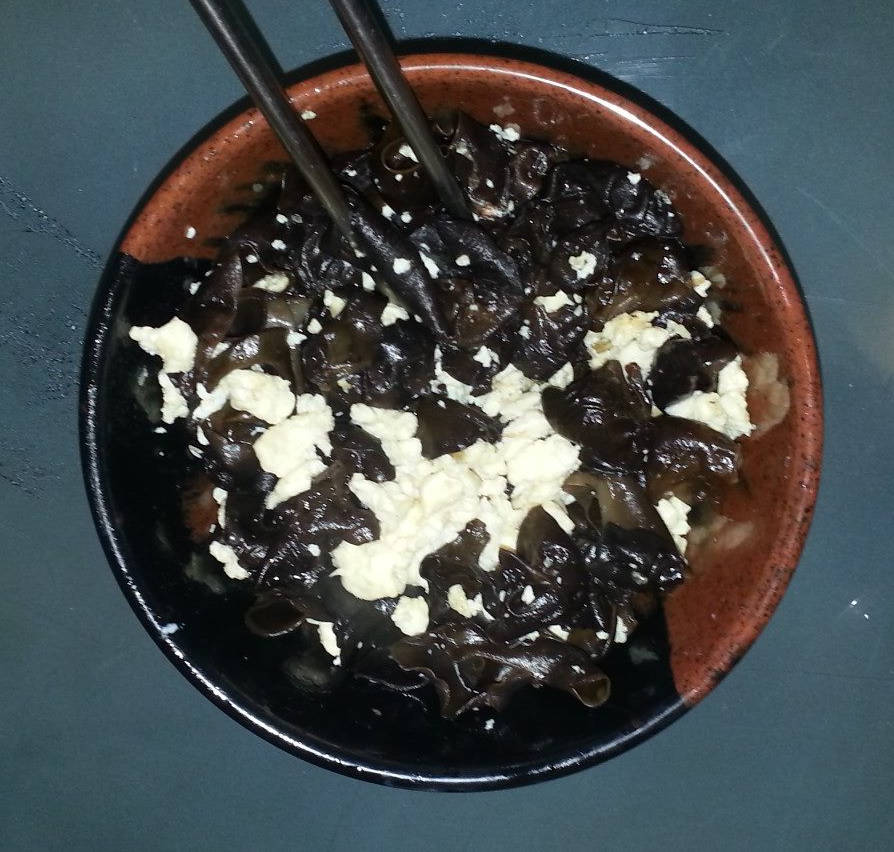

#+image/fried-garlic-chicken-soup.jpg
#+image/fried-garlic-chicken-soup.jpg 
黑木耳炒蛋的做法
- 到少量油，四成热，蛋打碎，用小汤勺缓慢搅拌
- 蛋炒熟后捞出，放入木耳单独炒
- 炒木耳要多放盐
- 最后一起炒

Elisp code: copy full path of current file into OS clipboard and yank ring
Copy below code into ~/.emacs. The hot keys is "C-x v f":
;; you need install xsel under Linux ;; xclip has some problem when copying under Linux(defun copy-yank-str (msg) (kill-new msg) (with-temp-buffer (insert msg) (shell-command-on-region (point-min) (point-max) (cond ((eq system-type 'cygwin) "putclip") ((eq system-type 'darwin) "pbcopy") (t "xsel -ib") ))))
(defun copy-full-path-of-current-buffer () "copy full path into the yank ring and OS clipboard" (interactive) (when buffer-file-name (kill-new (file-truename buffer-file-name)) (copy-yank-str (file-truename buffer-file-name)) (message "full path of current buffer => clipboard & yank ring") ))
(global-set-key (kbd "C-x v f") 'copy-full-path-of-current-buffer)
Poor man's github
Key points of this article:
- Build a github prototype written in Bash within 5 minutes
- Highlight key elements in my usual git work flow
- Git is scalabe. you can use any tool to extend it.
As Yuri Albuquerque mentioned, there are more powerful tools like gitolite. But the key concept behind the system is similar.
Add following code into ~/.bashrc and run "source ~/.bashrc", then run "gih" to see help:
function gih() { local MY_USERNAME=git local MY_SSH_URL=git@domain.name local MY_SSH_PORT=8888 if [ -z "$1" ]; then cat << 'EOF' Usage: gih [command]Commands:
l, ls, list - list the projects
n, new [project-name] - create a new project
r, readme [project-name] - show README
i, issue [project-name] - show issues list
st, status - check free space of git server
u, url [project-name] - the full url of the project
EOF else case $1 in l|ls|list) ssh -p $MY_SSH_PORT $MY_SSH_URL "ls -1"|sed 's/.git$//g' ;; n|new) if [ -z "$2" ]; then echo "Please input the name of new project!" echo "Current projects hosted:" ssh -p $MY_SSH_PORT $MY_SSH_URL "ls -1"|sed 's/.git$//g' else ssh -p $MY_SSH_PORT $MY_SSH_URL "mkdir -p ~/$2.git;cd ~/$2.git;git --bare init;" echo "Push existing repository from command line:" echo git remote add origin ssh://$MY_SSH_URL:$MY_SSH_PORT/home/$MY_USERNAME/$2.git echo git push -u origin master fi ;; r|readme) if [ -z "$2" ]; then echo "Please input the name of new project!" echo "Current projects hosted:" ssh -p $MY_SSH_PORT $MY_SSH_URL "ls -1"|sed 's/.git$//g' else ssh -p $MY_SSH_PORT $MY_SSH_URL "cd ~/$2.git;git show HEAD:README.org || git show HEAD:README.md" fi ;; i|issue) if [ -z "$2" ]; then echo "Please input the name of new project!" echo "Current projects hosted:" ssh -p $MY_SSH_PORT $MY_SSH_URL "ls -1"|sed 's/.git$//g' else ssh -p $MY_SSH_PORT git@sydneypc.mooo.com "cd ~/$2.git;git show HEAD:ISSUE.org || git show HEAD:ISSUE.md" fi ;; st|status) ssh -p $MY_SSH_PORT $MY_SSH_URL "df -h /dev/sda1" ;; u|url) echo ssh://$MY_SSH_URL:$MY_SSH_PORT/home/$MY_USERNAME/$2.git ;; *) echo "Unknown command, check help please" ;; esac fi }
番茄炒蛋的做法
- 四个6厘米直径的番茄对应4到6个蛋
- 多放油,番茄先炒,炒到茄红素溶于油,油为红色,全部捞出
- 放少量油,小火加温，加蛋,慢慢搅动蛋
- 加入番茄,然后加入太白粉勾兑的汤一点
参考阿基师教你番茄炒蛋. 
How to do the screen cast in Linux
See http://askubuntu.com/questions/107726/how-to-create-animated-gif-images-of-a-screencast.
Issues:
- does not work in i3.
- I'd better put all the files in ram disk because it takes time for the conversion
- gifsicle is NOT needed
- I need find some way to adjust the record frame
- I use gimp to crop the gif
How to use terminal in Emacs effectively
I'm an experienced bash user before learning Emacs. Now as a die hard Emacs user, I still want to use my bash skill.
The Emacs terminator simulator Ansi Term help me on this purpose. Check my setup and the EmacsWiki for the guide.
I need copy the output in ansi-term to somewhere else frequently. So I often got the issue about selecting output effectively?
Emacs manual says I can "M-x term-line-mode" to switch to term-line-mode to select text. Then I need restore to the original mode by "M-x term-char-mode".
That's many keys to press. Besides, I can not tell what's the current mode, term-char-mode or term-line-mode?
My solution is evil-mode. I press C-z to toggle on vim simulator in ansi-term. I can press C-z again to toggle off the vim simulator.
The beauty is I've got the Vi power to select,search, filter, yank.
BTW, "C-z" is the default hot key from evil-mode. Evil-mode assign "C-x C-z" for "M-x suspend-frame".
My git set up
Content of my .gitconfig,
[apply]
whitespace = nowarn
[user]
name = my name
email =my@email.com
[core]
; @see http://comments.gmane.org/gmane.comp.version-control.git/166098
filemode = true
;autocrlf = false
ignorecase = false
;autocrlf=false
;safecrlf=true
[color]
diff = auto
status = auto
branch = auto
ui = auto
[alias]
ca=commit --amend
cl = clean -fxd
au = add -u
st = status -sb #short status output for geeks
stu= status --untracked-files=no
r = rebase
c = commit
co = checkout
b = branch
s=show
l = log --pretty=format:'%C(yellow)%h%Creset %ad %s %Cred(%an)%Creset' --date=short --decorate --graph
d =diff
da= diff --name-only # get the file list
ds = diff --stat
dw=diff --word-diff #highlight word changes
dc = diff --cached
dcs = diff --cached --stat
t=stash
a=add
f=format-patch -n --stdout
rh=reset --hard
rs=reset --soft
undo=reset --soft HEAD^
rs=reset
cnt=count-objects
ps=push
p=pull --rebase
w = whatchanged
sb = show-branch
cp = cherry-pick
# @see http://magazine.redhat.com/2008/05/02/shipping-quality-code-with-git/
cpnx = cherry-pick --no-commit -x
rl = reflog
lp = log -p
lt = log --topo-order
gl = log --graph
m = merge
mt= mergetool
me = merge --no-commit --no-ff
brm = branch --merged
brnm = branch --no-merged
rnc = revert --no-commit
com = checkout master
glt = log --pretty=format:'%h : %s' --topo-order --graph
phm = push heroku master
pom = push origin master
puom= pull origin master
untrac=rm -r --cached
#produce patch for hg
hgp = show --format="From: %an <%ae>%n%s%n%b" -U8
show-root-folder = rev-parse --show-toplevel
forward = pull --ff -r
u = !git stash && git pull --rebase && git stash pop
[sendemail]
smtpencryption = tls
smtpserver = smtp.gmail.com
smtpuser = myname@gmail.com
smtpserverport = 587
[github]
user = github user
[push]
default = tracking
[merge]
branchdesc = true
log = true
tool = vimdiff
[diff]
tool = vimdiff
[mergetool]
prompt = false
Content of my .bashrc,
# enable bash completion in interactive shells
# @see http://www.simplicidade.org/notes/archives/2008/02/bash_completion.html
if [ -f /etc/bash_completion ]; then
# ArchLinux
. /etc/bash_completion
elif [ -f /etc/profile.d/bash-completion.sh ]; then
# Gentoo Linux
. /etc/profile.d/bash-completion.sh
fi
. $HOME/bash_completion.d/gibo-completion.bash
. $HOME/bash_completion.d/git-completion.bash
function parse_git_branch ()
{
git branch --no-color 2> /dev/null | sed -e '/^[^*]/d' -e 's/* \(.*\)/\1/'
}
function simpleprompt()
{
if test -n "`type -t git`"; then
PS1="\$(parse_git_branch) \\$ "
else
PS1="\\$ "
fi
}
alias gcd='cd $(git rev-parse --show-cdup)'
alias g="git status --short -b"
alias gn="git status --untracked-files=no --short -b"
alias gfl="git diff-tree --no-commit-id --name-only -r"
alias ga="git add"
alias gaa="git add ."
alias gau="git add -u"
alias gc="git commit -m"
alias gca="git commit --amend"
alias gb="git branch"
alias gbd="git branch -d"
alias gco="git checkout"
alias gcob="git checkout -b"
alias gt="git stash"
alias gta="git stash apply"
alias gm="git merge"
alias gmt="git mergetool"
alias gr="git rebase"
alias gl="git log --oneline --decorate --graph"
alias gs="git show"
alias gss="git show --stat"
alias gd="git diff"
alias gds="git diff --stat"
alias gdc="git diff --cached"
alias gdcs="git diff --cached --stat"
alias gbl="git blame"
alias gps="git push"
alias gpl="git pull"
alias cdgr='cd $(git rev-parse --show-toplevel)' #goto root dir
function gu(){
local st=`git status --porcelain --untracked=no`
if [ -z "$st" ]; then
git pull --rebase
else
git stash && git pull --rebase && git stash pop
fi
}
function gsrp(){
if [ -z "$1" ]; then
echo "Usage: gsrp old_string new_string (string could be perl regex)"
echo "replace the content of file in latest git commit"
elif [ $# -eq "2" ]; then
git diff-tree --no-commit-id --name-only -r HEAD|xargs perl -pi -e "s/$1/$2/g"
elif [ $# -eq "3" ]; then
git diff-tree --no-commit-id --name-only -r $1|xargs perl -pi -e "s/$2/$3/g"
fi
}
[ $(uname -s | grep -c CYGWIN) -eq 1 ] && OS_NAME="CYGWIN" || OS_NAME=`uname -s`
# xclip has some problem with my emacs, so I use xsel for everything
function pclip() {
if [ $OS_NAME == CYGWIN ]; then
putclip $@;
elif [ $OS_NAME == Darwin ]; then
pbcopy $@;
else
if [ -x /usr/bin/xsel ]; then
xsel -ib $@;
else
if [ -x /usr/bin/xclip ]; then
xclip -selection c $@;
else
echo "Neither xsel or xclip is installed!"
fi
fi
fi
}
# search the file in root directory of git repository, pop up dialog let you choose the path,
# then put the full path in clipboard
function gg()
{
local cli=`find $(git rev-parse --show-toplevel) -type f -iname '*'$*'*'|percol`
echo -n ${cli}|pclip
echo ${cli}
}
alias ge='grep -rsn --exclude=TAGS --exclude=tags --exclude=GTAGS --exclude-dir=.svn --exclude-dir=.sass-cache --exclude-dir=.cache --exclude-dir=.cvs --exclude-dir=.git --exclude-dir=.hg --exclude=\*.swp --exclude=\*~ --color=auto'
function ggs()
{
local cli=`ge -l $* $(git rev-parse --show-toplevel)/*|percol`
echo -n ${cli} |pclip;
echo ${cli}
}
I do lots of git stuff under shell, so I'm heavly dependent on below bash tools,
虱面鱼肚汤烧法
台湾很有名的小吃,烧法见型男大主厨.
要点:
- 先煎生姜是为了快速逼出姜的香味,同一个厨师在另一个节目中又建议姜丝最后放,因为姜放在水中煮就无味了.
- 如最后放生姜,姜丝要很细.
- 鱼肉一面,煎鱼皮沾锅.
- 放下鱼肉煮5分钟即可,否则鱼肉容易老.
- 豆腐当场切片下锅,这样容易入味
- 柴鱼粉是因为快速烧法,如果先熬鱼骨汤则不需要.
install google talk plugin (64bit) on gentoo Linux
firefox 'http://www.google.com/chat/video/thankyou.html' emerge -v deb2targz &&deb2targz google-talkplugin_current_amd64.deb &&
mkdir googletalk && cd googletalk
tar xvf ../google-talkplugin_current_i386.tar.gz &&
sudo cp -Rfv {etc,opt} /
sudo cp -Rfv usr/lib/* /usr/lib64/
Here is the content of google talk:
./etc/cron.daily:google-talkplugin
./opt/google:
chrome
talkplugin
./opt/google/chrome:
pepper
./opt/google/chrome/pepper:
libppo1d.so
./opt/google/talkplugin:
./usr/lib:
firefox
iceape
iceweasel
midbrowser
mozilla
xulrunner
xulrunner-addons
./usr/lib/firefox:
plugins
./usr/lib/firefox/plugins:
libnpgoogletalk.so
libnpgtpo3dautoplugin.so
libnpo1d.so
./usr/lib/iceape:
plugins
./usr/lib/iceape/plugins:
libnpgoogletalk.so
libnpgtpo3dautoplugin.so
libnpo1d.so
./usr/lib/iceweasel:
plugins
./usr/lib/iceweasel/plugins:
libnpgoogletalk.so
libnpgtpo3dautoplugin.so
libnpo1d.so
./usr/lib/midbrowser:
plugins
./usr/lib/midbrowser/plugins:
libnpgoogletalk.so
libnpgtpo3dautoplugin.so
libnpo1d.so
./usr/lib/mozilla:
plugins
./usr/lib/mozilla/plugins:
libnpgoogletalk.so
libnpgtpo3dautoplugin.so
libnpo1d.so
./usr/lib/xulrunner:
plugins
./usr/lib/xulrunner/plugins:
libnpgoogletalk.so
libnpgtpo3dautoplugin.so
libnpo1d.so
./usr/lib/xulrunner-addons:
plugins
./usr/lib/xulrunner-addons/plugins:
libnpgoogletalk.so
libnpgtpo3dautoplugin.so
libnpo1d.so
./usr/share:
doc
./usr/share/doc:
google-talkplugin
./usr/share/doc/google-talkplugin:
changelog.Debian.gz